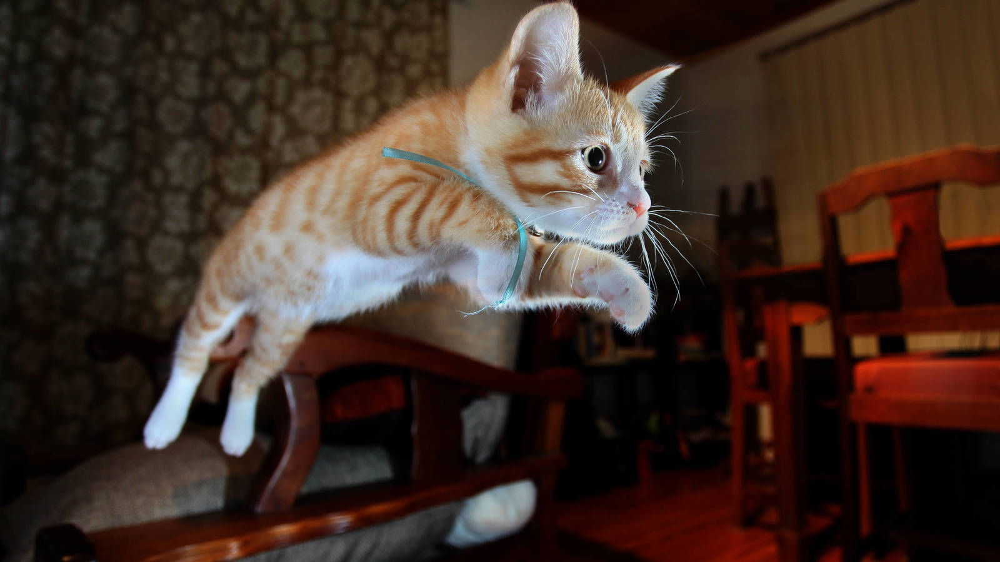

Gatos.
El gato doméstico1, llamado popularmente gato, y de forma coloquial minino, michino, michi, micho, mizo, miz, morroño o morrongo, entre otros nombres, es un mamífero carnívoro de la familia Felidae. Es una subespecie domesticada por la convivencia con el ser humano.
El nombre actual en muchas lenguas proviene del latín vulgar catus. Paradójicamente, catus aludía a los gatos salvajes, mientras que los gatos domésticos, en latín, eran llamados felis.
Como resultado de mutaciones genéticas, cruzamiento y selección artificial, hay numerosas razas. Algunas, como la raza Sphynx o la Peterbald están desprovistas de pelo; otras carecen de cola, como los gatos de la raza Manx, y algunas tienen coloraciones atípicas, como los llamados gatos azules.
El gato se comunica a través de vocalizaciones. Las más populares son su característico maullido y el ronroneo, pero puede aullar, gemir, gruñir y bufar.11 Además, adopta poses o expresiones que informan, a sus congéneres, sus enemigos o sus cuidadores, de su ánimo o sus intenciones.
Junto con el perro, es el animal doméstico más popular, como mascota, como ayuda en la lucha contra roedores o ambas cosas.
Por su amplio abanico de presas potenciales, por su alta eficiencia como depredador, y por su elevado éxito reproductivo –especialmente si se suministra artificialmente alimento a las colonias sin tomar medidas adicionales para limitar su fertilidad– el gato doméstico está incluido en la lista 100 de las especies exóticas invasoras más dañinas del mundo12 de la Unión Internacional para la Conservación de la Naturaleza.

Sociabilidad, comporrtamiento y costumbres.
Etológicamente, los gatos ven a los humanos como a un sustituto de sus madres y, durante su madurez, viven una especie de prolongación de la época en la que son cachorros.
Al contrario de lo que se suele suponer, en estado salvaje el gato es un animal muy social, que llega a establecer colonias más o menos jerarquizadas. Es un animal cazador y los machos marcan el territorio orinando.
Pueden sufrir enfermedades psicológicas tales como el estrés. Al igual que un humano estresado, tenderá a desarrollar un comportamiento neurótico.
Su vejez no es gradual, como la humana, sino abrupta.Dura aproximadamente un año y desemboca en la muerte. Un ejemplar viejo desarrolla cataratas y se vuelve más lento. También pierde el olfato. Generalmente duerme todo el día, sin desarrollar ninguna otra actividad, muestra de su extremo cansancio.
